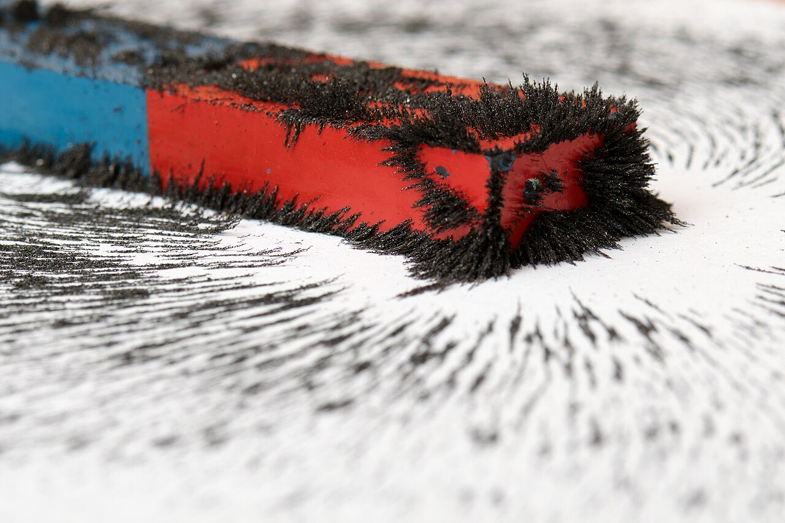
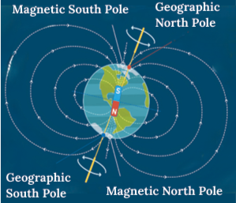

Innovative Learning — Magnetism Through Digital + Activity-Based Practice
This website is developed as part of my B.Ed innovative work with the aim of enhancing students’ understanding of Magnetism through digital and activity-based learning. Students explore magnetic forces, field lines, and real-world applications using videos, demonstrations, and hands-on tasks.
The modules highlight how magnets work at the particle level, how magnetic fields influence everyday tools, and how electromagnetism powers motors, speakers, and simple classroom builds. Each topic includes a short explanation, an observation activity, and a reflection task to build scientific language and reasoning.
Core Concepts
Magnetism 101Magnetic Force + Poles
Like poles repel and unlike poles attract. We use compasses and filings to visualize the invisible force around a magnet.
Students also compare the strength of different magnets and record how distance changes the force. This builds a data table for later discussion.
Earth as a Giant Magnet
Earth’s magnetic field shields us and guides compasses. Students observe how the field aligns a compass needle.
We connect this to navigation and explain why the magnetic north pole is not the same as the geographic north pole.
Electromagnets
Electric current can create magnetism. Students build a simple electromagnet using a battery, wire, and nail.
We investigate how the number of coil turns and battery strength affect lifting power and record results.

Hands-On Activities
Active LearningEach activity is designed for a 35–40 minute lesson with a quick demonstration, group work, and a short reflection task. Learners observe, record, and explain their findings using diagrams and keywords.
Activity 1: Sort magnetic and non-magnetic objects
Students test items like coins, clips, and plastic to classify them, then discuss why some materials respond to magnets.
Activity 2: Create a temporary magnet
Using an iron nail and a bar magnet, learners stroke in one direction and check if the nail attracts paper clips.
Activity 3: Map field lines
Iron filings are sprinkled on paper over a magnet to reveal field patterns; students sketch the curves and directions.
Activity 4: Build an electromagnet
Students wrap wire around a nail, connect a battery, and compare how coil turns change lifting power.
Video Resources
See It in MotionMagnetic Field Demo
Observe how field lines form with iron filings and how a compass responds.
Magnetism Basics
Watch a guided introduction that reviews poles, attraction, and repulsion.

Field Lines in Action
See magnetic field patterns and how a compass aligns to them.

Electromagnets Explained
Connect electricity and magnetism with real experiments.

Earth’s Magnetic Field
Why compasses point north and how field lines wrap around the planet.
Teacher Contact
Let’s ConnectTeacher Name: Tobin Thomas
Institution: Badhiriya B.Ed Training College
Email: tobinthomas963@gmail.com